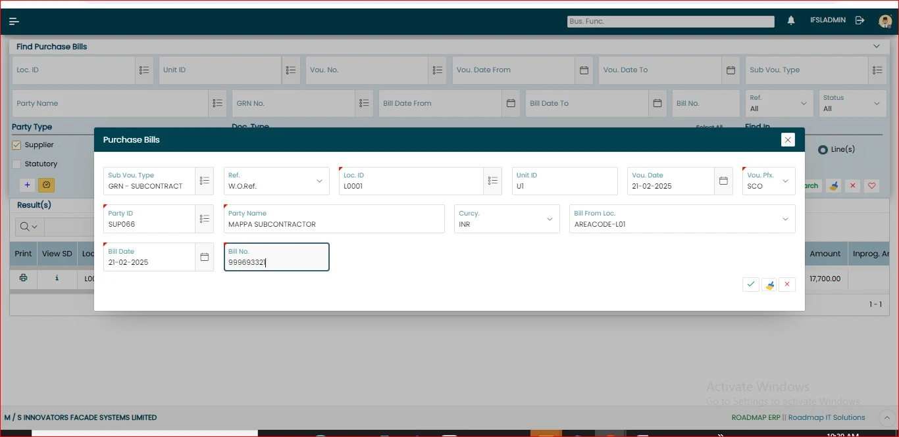
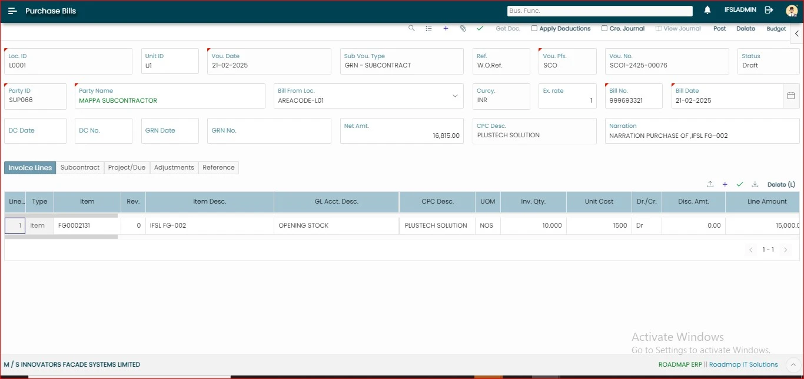
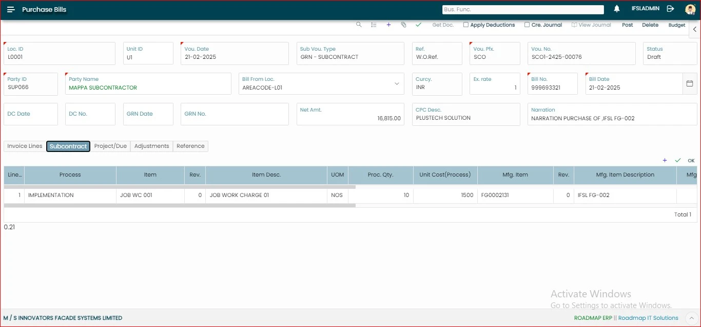

<div data-category="Financials" data-title="GRN Subcontract (without reference)" data-updated="December 01, 2025" data-contributors="RoadmapIT" data-breadcrumb="Home,Financials,GRN-Subcontract (without reference)">
  <div class="page-content">
    <p>A direct entry is a way of booking a bill without the reference of the GRN and without affecting the stock for a particular item. The matching type "GRN-Subcontract (Without reference)".</p>
    <p>This screen is to view the Invoice receipt for GRN Subcontract type.</p>
    <h5>Navigation path:</h5>
    <p class="fs-6">Financials \ Transactions \ Party Document\Purchase Bills</p>
    <h2>Registering Invoice</h2>
    <ul style="list-style-type: none; align-content: center">
      <li class="mouse-icon">
        By Clicking the
        <i class="bi bi-plus fs-4 mx-2 text-primary"></i>
        Add button we can create new document.
      </li>
    </ul>
    
    <ul style="list-style-type: none; align-content: center">
      <li class="mouse-icon">Enter Sub Vou.Type as GRN-Subcontract.</li>
      <li class="mouse-icon">Select Ref as W.O Ref.</li>
      <li class="mouse-icon">Select Loc ID from LOV, Unit will be auto populated.</li>
      <li class="mouse-icon">Select Vou.Pfx.</li>
      <li class="mouse-icon">Select Party ID from LOV, Party name will be auto populated.</li>
      <li class="mouse-icon">Select Bill date and Enter Bill number.</li>
      <li class="mouse-icon">Click save.</li>
    </ul>
    
    <ul style="list-style-type: none; align-content: center">
      <li class="mouse-icon">Invoice Receipt can be created directly in this screen</li>
      <li class="mouse-icon">
        Enter the Line items, enter the Quantity and unit cost and click
        <i class="bi bi-check-lg fs-4 mx-2 text-success"></i>
        to save the entry
      </li>
    </ul>
    <h2>Process</h2>
    
    <ul style="list-style-type: none; align-content: center">
      <li class="mouse-icon">Subcontract processes details enter in the Subcontract tab.</li>
      <li class="mouse-icon">After verify the value Click on Create Journal; Journal gets created.</li>
      <li class="mouse-icon">Press the post button to complete the entry and the document will be moved to the workflow document control.</li>
    </ul>
  </div>
</div>
